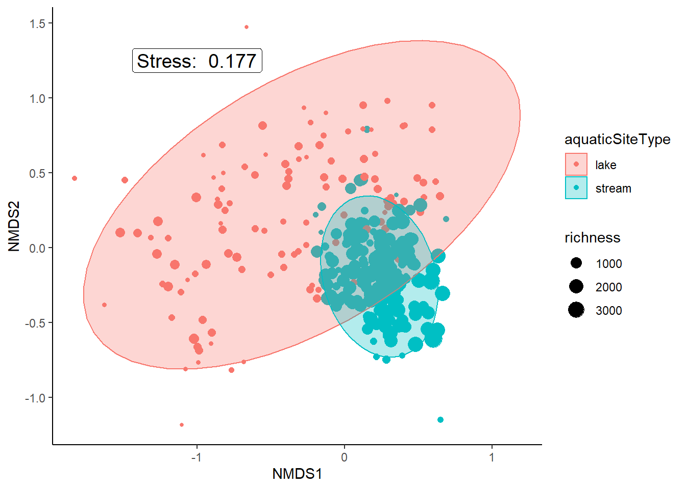
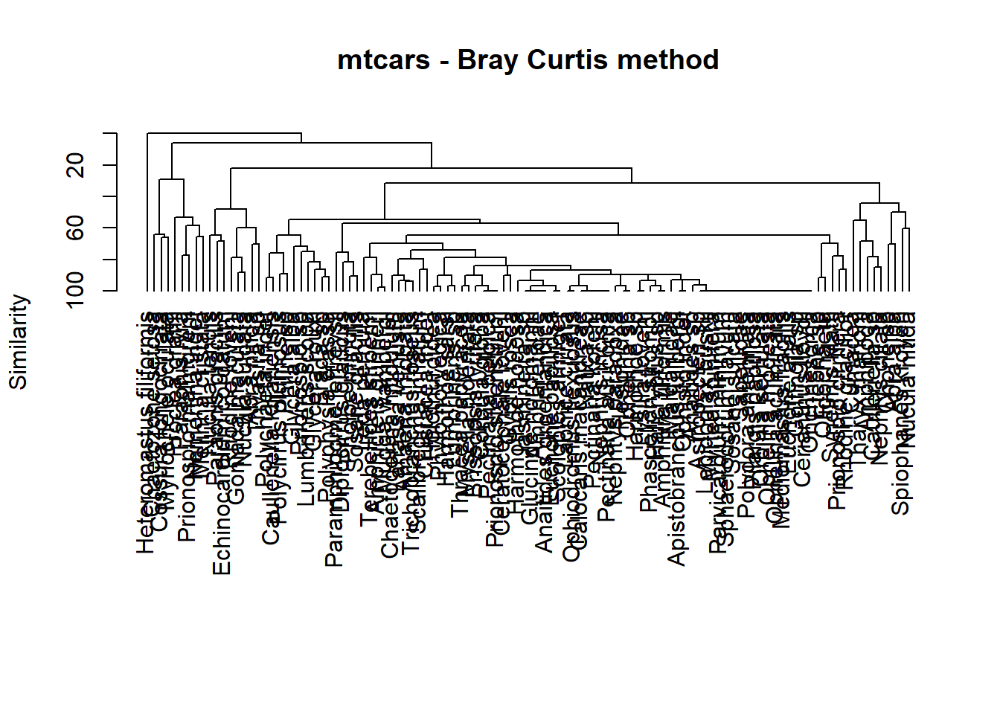
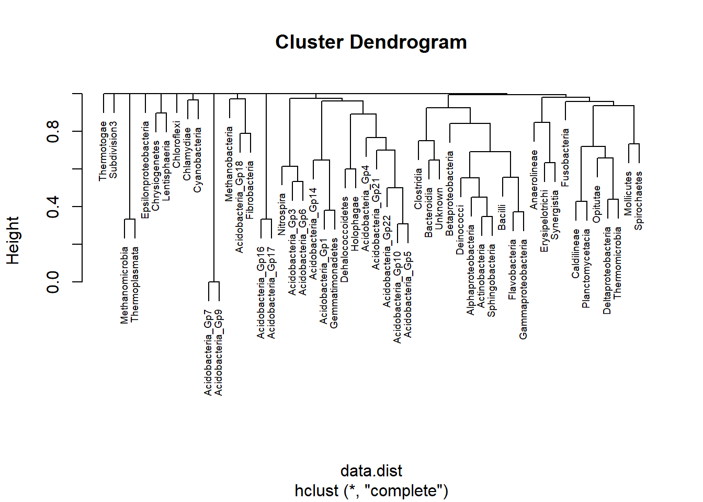

library(tidyverse)
library(vegan)
library(pheatmap)
library(cluster) # clustering algorithms
library(factoextra) # clustering visualization
library(dendextend) # for comparing two dendrogramsPrimerv7 to R code with R 4.12
Day 1
library(readxl)
library(janitor)
Attaching package: 'janitor'The following objects are masked from 'package:stats':
chisq.test, fisher.testekofish<- read_excel("E:/1 Master's/MSU/course classes/Fall 2022/WFA 7000 FALL2022/materials/primerv7/Practicals/Prac_04/Ekofisk environment.xls")New names:
* `` -> ...2
* `` -> ...3
* `` -> ...4
* `` -> ...5
* `` -> ...6
* ...# rename column
names(ekofish)<-ekofish[1,]Warning: The `value` argument of `names<-` can't be empty as of tibble 3.0.0.
Columns 1 and 12 must be named.Warning: The `value` argument of `names<-` must be a character vector as of
tibble 3.0.0.names(ekofish)[1]<-"site"
# remove first row
ekofish<- ekofish[-(1),]
# Null column
ekofish[,12]<- NULL
head(ekofish)# A tibble: 6 x 13
site Distance THC Redox `%Mud` `Phi mean` Ba Sr Cu Pb Ni
<chr> <chr> <chr> <chr> <chr> <chr> <chr> <chr> <chr> <chr> <chr>
1 S30 0.1000000~ 232 80 11.91 3.22000000~ 1967 587 97 65 14
2 S36 0.1000000~ 443 189 10.949~ 3.29999999~ 1997 509 8 43 10
3 S37 0.1000000~ 1896 85 12.289~ 3.18000000~ 1913 836 22 88 13
4 S31 0.1499999~ 251 124 7.5800~ 3.10999999~ 1922 498 14 38 16
5 S3 0.25 17 142 4.9400~ 3.06999999~ 3608 278 5 25 6
6 S35 0.25 56 153 8.3000~ 3.04999999~ 3143 302 5 23 10
# ... with 2 more variables: Dist# <chr>, Dist <chr># clean column names
ekofish <- ekofish %>% clean_names()
head(ekofish)# A tibble: 6 x 13
site distance thc redox percent_mud phi_mean ba sr cu pb ni
<chr> <chr> <chr> <chr> <chr> <chr> <chr> <chr> <chr> <chr> <chr>
1 S30 0.100000~ 232 80 11.91 3.22000~ 1967 587 97 65 14
2 S36 0.100000~ 443 189 10.9499999~ 3.29999~ 1997 509 8 43 10
3 S37 0.100000~ 1896 85 12.2899999~ 3.18000~ 1913 836 22 88 13
4 S31 0.149999~ 251 124 7.58000000~ 3.10999~ 1922 498 14 38 16
5 S3 0.25 17 142 4.94000000~ 3.06999~ 3608 278 5 25 6
6 S35 0.25 56 153 8.30000000~ 3.04999~ 3143 302 5 23 10
# ... with 2 more variables: dist_number <chr>, dist <chr># convert convert dist_number and dist column as factor
ekofish$dist_number <- as.factor(ekofish$dist_number)
ekofish$dist <- as.factor(ekofish$dist)
# convert other colunms as numeric if they are character
ekofish[,2:11]<- sapply(ekofish[,2:11], as.numeric)
head(ekofish)# A tibble: 6 x 13
site distance thc redox percent_mud phi_mean ba sr cu pb ni
<chr> <dbl> <dbl> <dbl> <dbl> <dbl> <dbl> <dbl> <dbl> <dbl> <dbl>
1 S30 0.1 232 80 11.9 3.22 1967 587 97 65 14
2 S36 0.1 443 189 11.0 3.3 1997 509 8 43 10
3 S37 0.1 1896 85 12.3 3.18 1913 836 22 88 13
4 S31 0.15 251 124 7.58 3.11 1922 498 14 38 16
5 S3 0.25 17 142 4.94 3.07 3608 278 5 25 6
6 S35 0.25 56 153 8.3 3.05 3143 302 5 23 10
# ... with 2 more variables: dist_number <fct>, dist <fct># descriptive statistics
summary(ekofish) site distance thc redox
Length:39 Min. :0.100 Min. : 8.00 Min. :-25.0
Class :character 1st Qu.:0.500 1st Qu.: 11.00 1st Qu.:123.0
Mode :character Median :1.600 Median : 14.00 Median :143.0
Mean :2.432 Mean : 98.13 Mean :148.0
3rd Qu.:3.650 3rd Qu.: 38.50 3rd Qu.:178.5
Max. :8.000 Max. :1896.00 Max. :240.0
percent_mud phi_mean ba sr
Min. : 0.640 Min. :2.830 Min. : 329.0 Min. : 51.0
1st Qu.: 3.875 1st Qu.:2.960 1st Qu.: 833.5 1st Qu.: 71.5
Median : 4.670 Median :3.010 Median :1922.0 Median :107.0
Mean : 5.207 Mean :3.023 Mean :1844.6 Mean :173.7
3rd Qu.: 5.770 3rd Qu.:3.070 3rd Qu.:2478.5 3rd Qu.:189.0
Max. :12.290 Max. :3.300 Max. :4913.0 Max. :836.0
cu pb ni dist_number dist
Min. : 2.000 Min. : 6.00 Min. : 3.00 1: 6 A:11
1st Qu.: 3.000 1st Qu.:12.00 1st Qu.: 5.50 2:10 B:12
Median : 3.000 Median :15.00 Median : 7.00 3:12 C:10
Mean : 6.564 Mean :20.49 Mean : 9.41 4:11 D: 6
3rd Qu.: 4.000 3rd Qu.:24.50 3rd Qu.: 8.00
Max. :97.000 Max. :88.00 Max. :54.00 rownames(ekofish)<-ekofish$siteWarning: Setting row names on a tibble is deprecated.# select only the columns that are numeric
ekofish<-ekofish %>% select(where(is.numeric))
head(ekofish)# A tibble: 6 x 10
distance thc redox percent_mud phi_mean ba sr cu pb ni
<dbl> <dbl> <dbl> <dbl> <dbl> <dbl> <dbl> <dbl> <dbl> <dbl>
1 0.1 232 80 11.9 3.22 1967 587 97 65 14
2 0.1 443 189 11.0 3.3 1997 509 8 43 10
3 0.1 1896 85 12.3 3.18 1913 836 22 88 13
4 0.15 251 124 7.58 3.11 1922 498 14 38 16
5 0.25 17 142 4.94 3.07 3608 278 5 25 6
6 0.25 56 153 8.3 3.05 3143 302 5 23 10Distance matrix calculation: Available methods are euclidean , manhattan, canberra, braycurtis, kulczynski, minkowski, rogerstanimoto, russellrao, sokalmichener, sokalsneath, and wminkowski.
# remove na
ekofish<- na.omit(ekofish)
# standardizing data
df<- scale(ekofish)
# dissimilarity matrix(
dissimilarity_matrix<- dist(df, method="euclidean")
# similarity matrix
similarity_matrix<- 1 - dissimilarity_matrix
# hierarchical clustering using complete linkage
hc<- hclust(dissimilarity_matrix, method="complete") #agglomerative clustering
# decisive clusters
#clusters<- diana(hc, k=3)
# plot the dendrogram
plot(hc)# algglomerative coefficients(
hc2<- agnes(df, method="complete")
hc2$ac[1] 0.8435725# methods to assess
m <- c( "average", "single", "complete", "ward")
names(m) <- c( "average", "single", "complete", "ward")
# calculate the dendrogram for each method
ac<- function (x){
agnes(df, method=x)$ac
}
# for loop apply to df and ac function
for (i in 1:length(m)){
print(paste0(m[i],' : ',(ac(m[i]))))
}[1] "average : 0.804571301430129"
[1] "single : 0.751469648387409"
[1] "complete : 0.843572536919754"
[1] "ward : 0.889574149142946"k=4 main group
fviz_dend(hc,k=4,cex=0.5,main = "Dendrogram - ward.D2",
xlab = "Objects", ylab = "Distance", sub = "",k_colors = c("#2E9FDF", "#00AFBB", "#E7B800", "#FC4E07"),
color_labels_by_k = TRUE, # color labels by groups
ggtheme = theme_gray() # Change theme)
)Warning: `guides(<scale> = FALSE)` is deprecated. Please use `guides(<scale> =
"none")` instead.# 1. Create a customized dendrogram
mycols <- c("#2E9FDF", "#00AFBB", "#E7B800")
dend <- as.dendrogram(hc) %>%
set("branches_lwd", 1) %>% # Branches line width
set("branches_k_color", mycols, k = 3) %>% # Color branches by groups
set("labels_colors", mycols, k = 3) %>% # Color labels by groups
set("labels_cex", 0.5) # Change label size
# 2. Create plot
fviz_dend(dend) Warning: `guides(<scale> = FALSE)` is deprecated. Please use `guides(<scale> =
"none")` instead.Day 2
Multi-dimensional scaling
RELATE test == Mantel Test in R
dispersion
# nmds , 100 iterations, bray curtis distance
orders <- read.csv("E:/1 Master's/MSU/course classes/Fall 2022/WFA 7000 FALL2022/materials/Primerv7 to R code/condensed_order.csv", header = TRUE)
head(orders) siteID namedLocation collectDate Amphipoda Coleoptera Diptera
1 ARIK ARIK.AOS.reach 2014-07-14 17:51:00 0 42 210
2 ARIK ARIK.AOS.reach 2014-09-29 18:20:00 0 5 54
3 ARIK ARIK.AOS.reach 2015-03-25 17:15:00 0 7 336
4 ARIK ARIK.AOS.reach 2015-07-14 14:55:00 0 14 80
5 ARIK ARIK.AOS.reach 2016-03-31 15:41:00 0 2 210
6 ARIK ARIK.AOS.reach 2016-07-13 15:24:00 0 43 647
Ephemeroptera Hemiptera Trichoptera Trombidiformes Tubificida decimalLatitude
1 27 27 0 6 20 39.75821
2 9 2 0 1 0 39.75821
3 2 1 11 59 13 39.75821
4 1 1 0 1 1 39.75821
5 0 0 4 4 34 39.75821
6 38 3 1 16 77 39.75821
decimalLongitude aquaticSiteType elevation
1 -102.4471 stream 1179.5
2 -102.4471 stream 1179.5
3 -102.4471 stream 1179.5
4 -102.4471 stream 1179.5
5 -102.4471 stream 1179.5
6 -102.4471 stream 1179.5# print
print(dim(orders))[1] 303 15Day 2
nmds_results<- metaMDS(orders[ , 4:11], # Define the community data
distance = "bray", # Specify a bray-curtis distance
try = 100)Square root transformation
Wisconsin double standardization
Run 0 stress 0.177015
Run 1 stress 0.1770698
... Procrustes: rmse 0.007303209 max resid 0.1234263
Run 2 stress 0.1819268
Run 3 stress 0.1757
... New best solution
... Procrustes: rmse 0.01317969 max resid 0.1268593
Run 4 stress 0.1897095
Run 5 stress 0.2182871
Run 6 stress 0.1782065
Run 7 stress 0.1846039
Run 8 stress 0.1999445
Run 9 stress 0.1757
... New best solution
... Procrustes: rmse 4.164228e-05 max resid 0.0005607043
... Similar to previous best
Run 10 stress 0.2185857
Run 11 stress 0.185824
Run 12 stress 0.1756999
... New best solution
... Procrustes: rmse 3.413699e-05 max resid 0.0004332832
... Similar to previous best
Run 13 stress 0.177362
Run 14 stress 0.1772394
Run 15 stress 0.1786806
Run 16 stress 0.1770036
Run 17 stress 0.2043276
Run 18 stress 0.2091768
Run 19 stress 0.1860592
Run 20 stress 0.179339
*** Solution reachedplot(nmds_results,'site')
orditorp(nmds_results,'site')# NMDS1 and NMDS2
data_scores<- as.data.frame(scores(nmds_results,display='site'))
# Now add the extra aquaticSiteType column
data_scores <- cbind(data_scores, orders[, c(1,14)])
colnames(data_scores)[3] <- "siteid"
colnames(data_scores)[4] <- "aquaticSiteType"
head(data_scores) NMDS1 NMDS2 siteid aquaticSiteType
1 -0.05716326 -0.26463575 ARIK stream
2 0.40962955 -0.19918376 ARIK stream
3 0.12359667 -0.08074464 ARIK stream
4 0.40027922 0.04000929 ARIK stream
5 0.13558713 0.24622679 ARIK stream
6 0.12448388 -0.02181380 ARIK stream# Next, we can add the scores for species data
species_scores <- as.data.frame(scores(nmds_results, "species"))
# Add a column equivalent to the row name to create species labels
species_scores$species <- rownames(species_scores)
head(species_scores) NMDS1 NMDS2 species
Amphipoda -1.1536167 0.3436050 Amphipoda
Coleoptera 0.3308556 -0.6268615 Coleoptera
Diptera 0.2769615 0.3948023 Diptera
Ephemeroptera 0.3247482 -0.4309029 Ephemeroptera
Hemiptera -1.1870404 -0.5393398 Hemiptera
Trichoptera 0.2636111 -0.4464375 Trichopteralibrary(viridis)Loading required package: viridisLiteggplot() +
geom_text(data = species_scores, aes(x = NMDS1, y = NMDS2, label = species),
alpha = 0.5, size = 10) +
geom_point(data = data_scores, aes(x = NMDS1, y = NMDS2,
color = aquaticSiteType), size = 3) +
scale_color_manual(values = inferno(15)[c(3, 8, 11)],
name = "Aquatic System Type") +
annotate(geom = "label", x = -1, y = 1.25, size = 10,
label = paste("Stress: ", round(nmds_results$stress, digits = 3))) +
theme_classic()ggplot(data=data_scores, aes(x = NMDS1, y = NMDS2)) +
geom_point(aes(shape= aquaticSiteType,color=siteid)) 
orders %>%
select(4:11) %>%
mutate('richness'=rowSums(.)) %>%
select(richness) %>%
cbind(data_scores) %>%
ggplot(aes(x = NMDS1, y = NMDS2)) +
geom_point(aes(size = richness, color = aquaticSiteType)) +
stat_ellipse(geom = "polygon", aes(group =aquaticSiteType, color = aquaticSiteType, fill = aquaticSiteType), alpha = 0.3)+
annotate(geom = "label", x = -1, y = 1.25, size = 5,
label = paste("Stress: ", round(nmds_results$stress, digits = 3))) +
theme_classic()
data_scores$site<- ekofish$siteWarning: Unknown or uninitialised column: `site`.head(data_scores) NMDS1 NMDS2 siteid aquaticSiteType
1 -0.05716326 -0.26463575 ARIK stream
2 0.40962955 -0.19918376 ARIK stream
3 0.12359667 -0.08074464 ARIK stream
4 0.40027922 0.04000929 ARIK stream
5 0.13558713 0.24622679 ARIK stream
6 0.12448388 -0.02181380 ARIK streamspecies_scores<-as.data.frame(scores(nmds_results, "species"))
head(species_scores) NMDS1 NMDS2
Amphipoda -1.1536167 0.3436050
Coleoptera 0.3308556 -0.6268615
Diptera 0.2769615 0.3948023
Ephemeroptera 0.3247482 -0.4309029
Hemiptera -1.1870404 -0.5393398
Trichoptera 0.2636111 -0.4464375scrs=scores(nmds_results,display = "sites", "species")colvec <- c("gray0", "gray0", "gray49", "gray49") # Identifies colors for group assignments
pchvec <- c(21, 21, 22, 22) # Identifies character symbols for group assignments
plot(nmds_results)
with(orders,points(nmds_results,display = "sites",
col = "black",pch = pchvec[aquaticSiteType],
bg = colvec[aquaticSiteType]))
ordihull(nmds_results,orders$aquaticSiteType,display = "sites",
draw = c("polygon"),
col = NULL,
border = c("gray0", "gray0", "gray48", "gray48"),
lty = c(1, 2, 1, 2),
lwd = 2.5)
points(scrs,
pch = c( 8 , 8 , 8, 8),
col = c("gray0", "gray0", "gray48", "gray48"),
bg = c("black"),
lwd = 3.0,
cex = 2.0 # Plots centroids as points on ordination
)treat=c(rep("stream",125),rep("lake",178))
ordiplot(nmds_results,type="n")
ordihull(nmds_results,groups=treat,draw="polygon",col=c("grey90",'red'),label=F)
orditorp(nmds_results,display="species",col="red",air=0.01)
orditorp(nmds_results,display="sites",col=c(rep("green",5),rep("blue",5)),
air=0.01,cex=1.25)Day 3
Anosim- Analysis of Similarity: it is distribution free. It only used rank similarities like nMDS.
bootstrap region estimation
BEST ANOVA ANALYSIS
Linkage tree analysis
data(dune)
data(dune.env)
head(dune) Achimill Agrostol Airaprae Alopgeni Anthodor Bellpere Bromhord Chenalbu
1 1 0 0 0 0 0 0 0
2 3 0 0 2 0 3 4 0
3 0 4 0 7 0 2 0 0
4 0 8 0 2 0 2 3 0
5 2 0 0 0 4 2 2 0
6 2 0 0 0 3 0 0 0
Cirsarve Comapalu Eleopalu Elymrepe Empenigr Hyporadi Juncarti Juncbufo
1 0 0 0 4 0 0 0 0
2 0 0 0 4 0 0 0 0
3 0 0 0 4 0 0 0 0
4 2 0 0 4 0 0 0 0
5 0 0 0 4 0 0 0 0
6 0 0 0 0 0 0 0 0
Lolipere Planlanc Poaprat Poatriv Ranuflam Rumeacet Sagiproc Salirepe
1 7 0 4 2 0 0 0 0
2 5 0 4 7 0 0 0 0
3 6 0 5 6 0 0 0 0
4 5 0 4 5 0 0 5 0
5 2 5 2 6 0 5 0 0
6 6 5 3 4 0 6 0 0
Scorautu Trifprat Trifrepe Vicilath Bracruta Callcusp
1 0 0 0 0 0 0
2 5 0 5 0 0 0
3 2 0 2 0 2 0
4 2 0 1 0 2 0
5 3 2 2 0 2 0
6 3 5 5 0 6 0m_com=as.matrix(dune)
ano=anosim(m_com,dune.env$Management,distance = 'bray',permutations = 9999)
ano
Call:
anosim(x = m_com, grouping = dune.env$Management, permutations = 9999, distance = "bray")
Dissimilarity: bray
ANOSIM statistic R: 0.2579
Significance: 0.0093
Permutation: free
Number of permutations: 9999Significance value less than 0.05 statistically significant, and the null hypothesis can be rejected.There is a statistically significant different in communities between groups. An R value close to 1.0 suggests dissimilarity between groups while an R value close to 0 suggests an even distribution of high and low ranks within and between groups.
Day 4
SIMPER
data(dune) # biotic data
data(dune.env) # environmental data
# Management is the sort species name
(sim <- with(dune.env, simper(dune, Management, permutations = 99)))cumulative contributions of most influential species:
$SF_BF
Agrostol Alopgeni Lolipere Trifrepe Poatriv Scorautu Bromhord
0.09824271 0.18254830 0.25956958 0.33367870 0.40734444 0.47729205 0.53120026
Achimill Planlanc Elymrepe Bracruta
0.57946526 0.62522255 0.67016196 0.71098133
$SF_HF
Agrostol Alopgeni Lolipere Planlanc Rumeacet Elymrepe Poatriv
0.08350879 0.16534834 0.23934930 0.30843624 0.37716139 0.43334492 0.48351753
Bracruta Eleopalu Poaprat Anthodor Sagiproc Trifprat
0.52804045 0.57205850 0.61423981 0.65549838 0.69628951 0.73696831
$SF_NM
Poatriv Alopgeni Agrostol Lolipere Eleopalu Poaprat Bracruta Elymrepe
0.1013601 0.1935731 0.2667383 0.3377578 0.3999419 0.4526707 0.5044725 0.5505643
Scorautu Trifrepe Sagiproc Salirepe
0.5926117 0.6320111 0.6712478 0.7091528
$BF_HF
Rumeacet Poatriv Planlanc Bromhord Lolipere Elymrepe Trifrepe
0.08163219 0.15193797 0.21918333 0.27967181 0.33969561 0.39843338 0.45298204
Anthodor Achimill Bracruta Alopgeni Trifprat Juncarti
0.50276849 0.55222648 0.60021994 0.64584333 0.69126471 0.73366621
$BF_NM
Lolipere Poatriv Poaprat Trifrepe Bromhord Bracruta Eleopalu Agrostol
0.1242718 0.1992126 0.2711756 0.3414609 0.3958520 0.4448077 0.4910724 0.5369083
Achimill Scorautu Anthodor Planlanc
0.5823926 0.6253645 0.6638182 0.7012577
$HF_NM
Poatriv Lolipere Rumeacet Poaprat Planlanc Bracruta Eleopalu
0.09913221 0.17468460 0.23917190 0.29701331 0.35469313 0.40365488 0.44804851
Agrostol Trifrepe Elymrepe Anthodor Juncarti Trifprat Salirepe
0.49226546 0.53434466 0.57564661 0.61543243 0.65341300 0.68921695 0.72432408 summary(sim)
Contrast: SF_BF
average sd ratio ava avb cumsum p
Agrostol 0.06137 0.03419 1.79490 4.66700 0.00000 0.098 0.04 *
Alopgeni 0.05267 0.03648 1.44390 4.33300 0.66700 0.182 0.13
Lolipere 0.04812 0.03945 1.21980 3.00000 6.00000 0.260 0.50
Trifrepe 0.04630 0.02553 1.81380 1.33300 4.66700 0.334 0.05 *
Poatriv 0.04602 0.03380 1.36150 4.66700 3.66700 0.407 0.59
Scorautu 0.04370 0.02492 1.75340 1.33300 4.33300 0.477 0.02 *
Bromhord 0.03368 0.02586 1.30230 0.50000 2.66700 0.531 0.02 *
Achimill 0.03015 0.02082 1.44820 0.16700 2.33300 0.580 0.02 *
Planlanc 0.02859 0.02155 1.32650 0.00000 2.00000 0.625 0.51
Elymrepe 0.02807 0.02978 0.94280 2.00000 1.33300 0.670 0.58
Bracruta 0.02550 0.02390 1.06690 2.00000 2.00000 0.711 0.85
Poaprat 0.02513 0.02397 1.04850 2.50000 4.00000 0.751 0.91
Sagiproc 0.02433 0.02215 1.09830 1.83300 0.66700 0.790 0.44
Bellpere 0.01986 0.01709 1.16220 0.66700 1.66700 0.822 0.07 .
Eleopalu 0.01861 0.04296 0.43330 1.33300 0.00000 0.852 0.88
Anthodor 0.01754 0.02580 0.67980 0.00000 1.33300 0.880 0.85
Juncbufo 0.01603 0.02371 0.67620 1.16700 0.00000 0.905 0.57
Vicilath 0.01467 0.01331 1.10260 0.00000 1.00000 0.929 0.04 *
Hyporadi 0.01029 0.01520 0.67680 0.00000 0.66700 0.945 0.74
Ranuflam 0.00931 0.01360 0.68450 0.66700 0.00000 0.960 0.93
Juncarti 0.00698 0.01611 0.43330 0.50000 0.00000 0.972 0.99
Callcusp 0.00698 0.01611 0.43330 0.50000 0.00000 0.983 0.86
Rumeacet 0.00453 0.01044 0.43330 0.33300 0.00000 0.990 0.96
Cirsarve 0.00398 0.00918 0.43360 0.33300 0.00000 0.996 0.47
Chenalbu 0.00233 0.00537 0.43330 0.16700 0.00000 1.000 0.41
Airaprae 0.00000 0.00000 NaN 0.00000 0.00000 1.000 0.81
Comapalu 0.00000 0.00000 NaN 0.00000 0.00000 1.000 0.66
Empenigr 0.00000 0.00000 NaN 0.00000 0.00000 1.000 0.56
Salirepe 0.00000 0.00000 NaN 0.00000 0.00000 1.000 0.92
Trifprat 0.00000 0.00000 NaN 0.00000 0.00000 1.000 0.89
---
Signif. codes: 0 '***' 0.001 '**' 0.01 '*' 0.05 '.' 0.1 ' ' 1
Contrast: SF_HF
average sd ratio ava avb cumsum p
Agrostol 0.04738 0.03127 1.51510 4.66700 1.40000 0.084 0.31
Alopgeni 0.04643 0.03290 1.41150 4.33300 1.60000 0.165 0.20
Lolipere 0.04199 0.02701 1.55460 3.00000 4.00000 0.239 0.77
Planlanc 0.03920 0.03321 1.18040 0.00000 3.00000 0.308 0.02 *
Rumeacet 0.03899 0.02737 1.42470 0.33300 3.20000 0.377 0.01 **
Elymrepe 0.03188 0.02955 1.07870 2.00000 2.00000 0.433 0.36
Poatriv 0.02847 0.02152 1.32270 4.66700 4.80000 0.484 1.00
Bracruta 0.02526 0.02104 1.20040 2.00000 2.80000 0.528 0.93
Eleopalu 0.02497 0.03888 0.64240 1.33300 0.80000 0.572 0.77
Poaprat 0.02393 0.01918 1.24780 2.50000 3.40000 0.614 0.99
Anthodor 0.02341 0.02143 1.09230 0.00000 1.80000 0.655 0.64
Sagiproc 0.02314 0.02048 1.13010 1.83300 0.80000 0.696 0.40
Trifprat 0.02308 0.02343 0.98500 0.00000 1.80000 0.737 0.01 **
Juncarti 0.02285 0.02568 0.88990 0.50000 1.60000 0.777 0.54
Trifrepe 0.02238 0.01949 1.14860 1.33300 2.80000 0.817 0.99
Juncbufo 0.02164 0.02224 0.97330 1.16700 1.20000 0.855 0.22
Scorautu 0.02051 0.01642 1.24890 1.33300 2.80000 0.891 0.83
Achimill 0.01518 0.01139 1.33260 0.16700 1.20000 0.918 0.68
Bromhord 0.01338 0.01450 0.92220 0.50000 0.80000 0.941 0.73
Ranuflam 0.01066 0.01339 0.79640 0.66700 0.40000 0.960 0.86
Bellpere 0.00999 0.01257 0.79480 0.66700 0.40000 0.978 0.87
Callcusp 0.00662 0.01508 0.43930 0.50000 0.00000 0.989 0.95
Cirsarve 0.00381 0.00867 0.43940 0.33300 0.00000 0.996 0.52
Chenalbu 0.00221 0.00503 0.43930 0.16700 0.00000 1.000 0.53
Airaprae 0.00000 0.00000 NaN 0.00000 0.00000 1.000 0.82
Comapalu 0.00000 0.00000 NaN 0.00000 0.00000 1.000 0.87
Empenigr 0.00000 0.00000 NaN 0.00000 0.00000 1.000 0.54
Hyporadi 0.00000 0.00000 NaN 0.00000 0.00000 1.000 0.92
Salirepe 0.00000 0.00000 NaN 0.00000 0.00000 1.000 0.90
Vicilath 0.00000 0.00000 NaN 0.00000 0.00000 1.000 0.87
---
Signif. codes: 0 '***' 0.001 '**' 0.01 '*' 0.05 '.' 0.1 ' ' 1
Contrast: SF_NM
average sd ratio ava avb cumsum p
Poatriv 0.07828 0.04095 1.91180 4.66700 0.00000 0.101 0.01 **
Alopgeni 0.07122 0.04696 1.51670 4.33300 0.00000 0.194 0.01 **
Agrostol 0.05651 0.04418 1.27920 4.66700 2.16700 0.267 0.05 *
Lolipere 0.05485 0.05991 0.91550 3.00000 0.33300 0.338 0.23
Eleopalu 0.04803 0.04717 1.01820 1.33300 2.16700 0.400 0.04 *
Poaprat 0.04072 0.03179 1.28100 2.50000 0.66700 0.453 0.04 *
Bracruta 0.04001 0.03440 1.16310 2.00000 2.83300 0.504 0.11
Elymrepe 0.03560 0.03852 0.92430 2.00000 0.00000 0.551 0.07 .
Scorautu 0.03247 0.03481 0.93280 1.33300 3.16700 0.593 0.10 .
Trifrepe 0.03043 0.03163 0.96190 1.33300 1.83300 0.632 0.65
Sagiproc 0.03030 0.03048 0.99430 1.83300 0.50000 0.671 0.05 *
Salirepe 0.02928 0.03201 0.91440 0.00000 1.83300 0.709 0.02 *
Anthodor 0.02454 0.03669 0.66880 0.00000 1.33300 0.741 0.52
Callcusp 0.02276 0.02944 0.77310 0.50000 1.16700 0.770 0.08 .
Ranuflam 0.02257 0.02282 0.98890 0.66700 1.33300 0.800 0.09 .
Juncarti 0.02254 0.02860 0.78830 0.50000 1.16700 0.829 0.49
Hyporadi 0.02011 0.03129 0.64260 0.00000 1.16700 0.855 0.18
Juncbufo 0.01986 0.02903 0.68400 1.16700 0.00000 0.881 0.31
Planlanc 0.01542 0.02277 0.67720 0.00000 0.83300 0.900 0.99
Airaprae 0.01488 0.02188 0.68020 0.00000 0.83300 0.920 0.07 .
Bellpere 0.01232 0.01592 0.77370 0.66700 0.33300 0.936 0.66
Comapalu 0.01188 0.01741 0.68260 0.00000 0.66700 0.951 0.08 .
Achimill 0.00929 0.01493 0.62240 0.16700 0.33300 0.963 1.00
Bromhord 0.00717 0.01633 0.43910 0.50000 0.00000 0.972 0.95
Rumeacet 0.00559 0.01275 0.43840 0.33300 0.00000 0.980 0.99
Empenigr 0.00523 0.01200 0.43540 0.00000 0.33300 0.986 0.28
Cirsarve 0.00478 0.01089 0.43910 0.33300 0.00000 0.993 0.01 **
Chenalbu 0.00289 0.00660 0.43820 0.16700 0.00000 0.996 0.02 *
Vicilath 0.00279 0.00642 0.43450 0.00000 0.16700 1.000 0.79
Trifprat 0.00000 0.00000 NaN 0.00000 0.00000 1.000 0.99
---
Signif. codes: 0 '***' 0.001 '**' 0.01 '*' 0.05 '.' 0.1 ' ' 1
Contrast: BF_HF
average sd ratio ava avb cumsum p
Rumeacet 0.03867 0.02606 1.48380 0.00000 3.20000 0.082 0.03 *
Poatriv 0.03330 0.02579 1.29110 3.66700 4.80000 0.152 0.95
Planlanc 0.03185 0.01830 1.74010 2.00000 3.00000 0.219 0.34
Bromhord 0.02865 0.01799 1.59260 2.66700 0.80000 0.280 0.06 .
Lolipere 0.02843 0.02215 1.28340 6.00000 4.00000 0.340 0.95
Elymrepe 0.02782 0.02959 0.94040 1.33300 2.00000 0.398 0.55
Trifrepe 0.02584 0.01656 1.56030 4.66700 2.80000 0.453 0.76
Anthodor 0.02358 0.02042 1.15470 1.33300 1.80000 0.503 0.57
Achimill 0.02343 0.01474 1.58930 2.33300 1.20000 0.552 0.15
Bracruta 0.02273 0.01802 1.26170 2.00000 2.80000 0.600 0.86
Alopgeni 0.02161 0.02308 0.93630 0.66700 1.60000 0.646 0.83
Trifprat 0.02151 0.02207 0.97470 0.00000 1.80000 0.691 0.09 .
Juncarti 0.02008 0.02555 0.78600 0.00000 1.60000 0.734 0.69
Scorautu 0.01932 0.01357 1.42410 4.33300 2.80000 0.774 0.76
Bellpere 0.01829 0.01486 1.23050 1.66700 0.40000 0.813 0.23
Agrostol 0.01761 0.02284 0.77080 0.00000 1.40000 0.850 1.00
Juncbufo 0.01500 0.02066 0.72600 0.00000 1.20000 0.882 0.58
Vicilath 0.01285 0.01140 1.12740 1.00000 0.00000 0.909 0.07 .
Sagiproc 0.01168 0.01297 0.90080 0.66700 0.80000 0.934 0.89
Eleopalu 0.01017 0.02111 0.48170 0.00000 0.80000 0.955 0.94
Hyporadi 0.00895 0.01312 0.68240 0.66700 0.00000 0.974 0.65
Poaprat 0.00720 0.01010 0.71330 4.00000 3.40000 0.989 1.00
Ranuflam 0.00508 0.01055 0.48170 0.00000 0.40000 1.000 0.95
Airaprae 0.00000 0.00000 NaN 0.00000 0.00000 1.000 0.61
Chenalbu 0.00000 0.00000 NaN 0.00000 0.00000 1.000 0.36
Cirsarve 0.00000 0.00000 NaN 0.00000 0.00000 1.000 0.46
Comapalu 0.00000 0.00000 NaN 0.00000 0.00000 1.000 0.66
Empenigr 0.00000 0.00000 NaN 0.00000 0.00000 1.000 0.42
Salirepe 0.00000 0.00000 NaN 0.00000 0.00000 1.000 0.83
Callcusp 0.00000 0.00000 NaN 0.00000 0.00000 1.000 0.78
---
Signif. codes: 0 '***' 0.001 '**' 0.01 '*' 0.05 '.' 0.1 ' ' 1
Contrast: BF_NM
average sd ratio ava avb cumsum p
Lolipere 0.09068 0.02644 3.42900 6.00000 0.33300 0.124 0.01 **
Poatriv 0.05468 0.04465 1.22500 3.66700 0.00000 0.199 0.30
Poaprat 0.05251 0.01813 2.89700 4.00000 0.66700 0.271 0.01 **
Trifrepe 0.05129 0.02756 1.86100 4.66700 1.83300 0.342 0.05 *
Bromhord 0.03969 0.02920 1.35900 2.66700 0.00000 0.396 0.02 *
Bracruta 0.03572 0.02869 1.24500 2.00000 2.83300 0.445 0.36
Eleopalu 0.03376 0.03573 0.94500 0.00000 2.16700 0.491 0.48
Agrostol 0.03345 0.03473 0.96300 0.00000 2.16700 0.537 0.86
Achimill 0.03319 0.02338 1.42000 2.33300 0.33300 0.582 0.03 *
Scorautu 0.03136 0.02026 1.54800 4.33300 3.16700 0.625 0.27
Anthodor 0.02806 0.03295 0.85200 1.33300 1.33300 0.664 0.36
Planlanc 0.02732 0.02193 1.24600 2.00000 0.83300 0.701 0.54
Salirepe 0.02677 0.02927 0.91400 0.00000 1.83300 0.738 0.12
Bellpere 0.02353 0.01909 1.23200 1.66700 0.33300 0.770 0.01 **
Hyporadi 0.02172 0.02450 0.88600 0.66700 1.16700 0.800 0.22
Ranuflam 0.02031 0.02275 0.89300 0.00000 1.33300 0.828 0.25
Elymrepe 0.01999 0.02926 0.68300 1.33300 0.00000 0.855 0.87
Callcusp 0.01783 0.02681 0.66500 0.00000 1.16700 0.880 0.36
Juncarti 0.01769 0.02600 0.68100 0.00000 1.16700 0.904 0.74
Vicilath 0.01577 0.01447 1.09000 1.00000 0.16700 0.925 0.01 **
Sagiproc 0.01543 0.01857 0.83100 0.66700 0.50000 0.947 0.79
Airaprae 0.01341 0.01969 0.68100 0.00000 0.83300 0.965 0.24
Comapalu 0.01074 0.01571 0.68400 0.00000 0.66700 0.980 0.36
Alopgeni 0.01000 0.01463 0.68300 0.66700 0.00000 0.993 0.99
Empenigr 0.00479 0.01105 0.43300 0.00000 0.33300 1.000 0.32
Chenalbu 0.00000 0.00000 NaN 0.00000 0.00000 1.000 0.49
Cirsarve 0.00000 0.00000 NaN 0.00000 0.00000 1.000 0.44
Juncbufo 0.00000 0.00000 NaN 0.00000 0.00000 1.000 0.96
Rumeacet 0.00000 0.00000 NaN 0.00000 0.00000 1.000 0.99
Trifprat 0.00000 0.00000 NaN 0.00000 0.00000 1.000 0.90
---
Signif. codes: 0 '***' 0.001 '**' 0.01 '*' 0.05 '.' 0.1 ' ' 1
Contrast: HF_NM
average sd ratio ava avb cumsum p
Poatriv 0.07155 0.01368 5.23000 4.80000 0.00000 0.099 0.04 *
Lolipere 0.05453 0.02962 1.84100 4.00000 0.33300 0.175 0.13
Rumeacet 0.04655 0.03081 1.51100 3.20000 0.00000 0.239 0.01 **
Poaprat 0.04175 0.01885 2.21500 3.40000 0.66700 0.297 0.02 *
Planlanc 0.04163 0.02956 1.40800 3.00000 0.83300 0.355 0.02 *
Bracruta 0.03534 0.02010 1.75800 2.80000 2.83300 0.404 0.39
Eleopalu 0.03204 0.03231 0.99200 0.80000 2.16700 0.448 0.53
Agrostol 0.03192 0.02889 1.10500 1.40000 2.16700 0.492 0.96
Trifrepe 0.03037 0.02287 1.32800 2.80000 1.83300 0.534 0.63
Elymrepe 0.02981 0.03868 0.77100 2.00000 0.00000 0.576 0.47
Anthodor 0.02872 0.02480 1.15800 1.80000 1.33300 0.615 0.26
Juncarti 0.02741 0.02854 0.96100 1.60000 1.16700 0.653 0.15
Trifprat 0.02584 0.02597 0.99500 1.80000 0.00000 0.689 0.01 **
Salirepe 0.02534 0.02729 0.92900 0.00000 1.83300 0.724 0.16
Alopgeni 0.02446 0.03240 0.75500 1.60000 0.00000 0.758 0.89
Scorautu 0.02070 0.01412 1.46600 2.80000 3.16700 0.787 0.84
Ranuflam 0.01928 0.01994 0.96700 0.40000 1.33300 0.814 0.26
Juncbufo 0.01818 0.02465 0.73800 1.20000 0.00000 0.839 0.37
Hyporadi 0.01714 0.02655 0.64600 0.00000 1.16700 0.863 0.43
Callcusp 0.01683 0.02490 0.67600 0.00000 1.16700 0.886 0.45
Achimill 0.01656 0.01490 1.11100 1.20000 0.33300 0.909 0.69
Sagiproc 0.01528 0.01653 0.92400 0.80000 0.50000 0.930 0.91
Airaprae 0.01261 0.01824 0.69100 0.00000 0.83300 0.947 0.33
Bromhord 0.01209 0.01517 0.79700 0.80000 0.00000 0.964 0.82
Comapalu 0.01011 0.01456 0.69400 0.00000 0.66700 0.978 0.18
Bellpere 0.00880 0.01373 0.64100 0.40000 0.33300 0.990 0.92
Empenigr 0.00454 0.01033 0.43900 0.00000 0.33300 0.997 0.62
Vicilath 0.00240 0.00546 0.43900 0.00000 0.16700 1.000 0.88
Chenalbu 0.00000 0.00000 NaN 0.00000 0.00000 1.000 0.52
Cirsarve 0.00000 0.00000 NaN 0.00000 0.00000 1.000 0.58
---
Signif. codes: 0 '***' 0.001 '**' 0.01 '*' 0.05 '.' 0.1 ' ' 1
Permutation: free
Number of permutations: 99colnames(dune.env)[1] "A1" "Moisture" "Management" "Use" "Manure" dune.mrpp <- with(dune.env, mrpp(dune, Management))
dune.mrpp
Call:
mrpp(dat = dune, grouping = Management)
Dissimilarity index: euclidean
Weights for groups: n
Class means and counts:
BF HF NM SF
delta 10.03 11.08 10.66 12.27
n 3 5 6 6
Chance corrected within-group agreement A: 0.1246
Based on observed delta 11.15 and expected delta 12.74
Significance of delta: 0.001
Permutation: free
Number of permutations: 999# Save and change plotting parameters
def.par <- par(no.readonly = TRUE)
layout(matrix(1:2,nr=1))
plot(dune.ord <- metaMDS(dune), type="text", display="sites" )Run 0 stress 0.1192678
Run 1 stress 0.1183186
... New best solution
... Procrustes: rmse 0.02027033 max resid 0.06496197
Run 2 stress 0.1183186
... Procrustes: rmse 6.734379e-06 max resid 2.265606e-05
... Similar to previous best
Run 3 stress 0.1183186
... Procrustes: rmse 1.301163e-05 max resid 4.048833e-05
... Similar to previous best
Run 4 stress 0.1808911
Run 5 stress 0.1808911
Run 6 stress 0.1183186
... Procrustes: rmse 3.471016e-06 max resid 7.780352e-06
... Similar to previous best
Run 7 stress 0.1183186
... Procrustes: rmse 5.066104e-06 max resid 1.739458e-05
... Similar to previous best
Run 8 stress 0.1183186
... Procrustes: rmse 2.915824e-06 max resid 7.988388e-06
... Similar to previous best
Run 9 stress 0.1886532
Run 10 stress 0.1183186
... Procrustes: rmse 3.697275e-06 max resid 1.250524e-05
... Similar to previous best
Run 11 stress 0.1192678
Run 12 stress 0.1192678
Run 13 stress 0.1183186
... Procrustes: rmse 3.787357e-06 max resid 9.723932e-06
... Similar to previous best
Run 14 stress 0.1183186
... Procrustes: rmse 4.386282e-06 max resid 1.287277e-05
... Similar to previous best
Run 15 stress 0.1192678
Run 16 stress 0.1183186
... Procrustes: rmse 1.082773e-05 max resid 3.366667e-05
... Similar to previous best
Run 17 stress 0.1812934
Run 18 stress 0.1192679
Run 19 stress 0.1192678
Run 20 stress 0.1192679
*** Solution reachedwith(dune.env, ordihull(dune.ord, Management))
with(dune.mrpp, {
fig.dist <- hist(boot.deltas, xlim=range(c(delta,boot.deltas)),
main="Test of Differences Among Groups")
abline(v=delta);
text(delta, 2*mean(fig.dist$counts), adj = -0.5,
expression(bold(delta)), cex=1.5 ) }
)par(def.par)
## meandist
dune.md <- with(dune.env, meandist(vegdist(dune), Management))
dune.md BF HF NM SF
BF 0.4159972 0.4736637 0.7296979 0.6247169
HF 0.4736637 0.4418115 0.7217933 0.5673664
NM 0.7296979 0.7217933 0.6882438 0.7723367
SF 0.6247169 0.5673664 0.7723367 0.5813015
attr(,"class")
[1] "meandist" "matrix"
attr(,"n")
grouping
BF HF NM SF
3 5 6 6 summary(dune.md)
Mean distances:
Average
within groups 0.5746346
between groups 0.6664172
overall 0.6456454
Summary statistics:
Statistic
MRPP A weights n 0.1423836
MRPP A weights n-1 0.1339124
MRPP A weights n(n-1) 0.1099842
Classification strength 0.1127012plot(dune.md)
plot(dune.md, kind="histogram")dune.mrpp$delta # The overall weighted mean of group mean distances.[1] 11.15359dune.mrpp$boot.deltas # he deltas calculated from each of the permuted datasets [1] 12.37015 12.96316 13.05861 13.36131 13.29667 12.76612 12.84876 12.63856
[9] 13.03533 13.03143 12.83146 13.15501 12.89302 12.21607 12.35865 12.87486
[17] 13.19270 12.77778 13.10385 13.06892 12.62080 13.08536 12.14648 12.74077
[25] 12.96120 12.93862 12.68371 12.67100 12.85122 12.08906 13.12532 12.93506
[33] 12.77624 12.43369 11.77794 12.85484 12.82652 12.90853 12.91430 12.51058
[41] 13.17381 12.29777 13.13295 12.53057 12.73767 13.09780 11.66643 12.61856
[49] 12.41370 13.03392 12.47594 12.92333 13.35233 13.09567 11.95919 12.95449
[57] 12.96237 12.24486 13.05116 12.58815 12.81075 12.58366 12.53010 12.61081
[65] 12.51222 12.77137 13.01271 12.94666 12.77854 12.68458 12.21048 12.93922
[73] 12.46229 12.66851 12.06708 12.71154 13.12958 12.57644 12.85866 12.90797
[81] 13.09002 13.17050 13.31859 11.93995 12.54684 12.18135 12.83666 12.73397
[89] 12.30607 12.07329 13.02873 12.98268 12.97230 12.56543 12.68476 12.15448
[97] 12.79372 12.65014 12.23399 12.98806 12.58466 13.06041 11.69343 12.31086
[105] 12.79084 12.66411 12.61006 13.27479 12.44747 12.71380 13.36025 12.79321
[113] 12.98100 12.78757 13.01376 12.57450 12.19496 11.80779 13.08971 12.46423
[121] 12.10063 13.01706 12.57759 12.74854 12.70418 12.60347 13.07140 12.77175
[129] 12.81310 12.38259 12.79024 13.05614 12.52784 13.14844 12.72104 12.89868
[137] 12.94246 11.63555 12.94268 12.82824 12.49454 12.57936 12.50722 12.79781
[145] 13.06564 12.98640 12.50550 13.14983 12.54491 12.70573 12.75213 12.24105
[153] 12.56459 12.44948 13.00000 12.73642 12.56363 12.96281 13.11585 12.69388
[161] 11.88798 12.82701 11.99978 12.51369 12.88514 12.96744 12.99378 12.50310
[169] 13.24798 12.90924 11.80394 13.07924 12.57074 12.58707 12.47890 12.33973
[177] 12.89109 12.58561 12.33131 13.09024 13.09888 12.95636 12.75121 12.04439
[185] 12.86571 12.31447 12.66778 13.13593 12.94570 12.72377 12.95587 13.30013
[193] 12.68989 13.21500 13.24733 13.07173 12.91119 12.05110 13.01546 13.11067
[201] 12.68727 12.50561 12.94316 12.91232 12.73515 12.19881 13.25744 13.03329
[209] 13.16966 13.08469 12.77995 12.69694 12.77179 12.48967 12.78741 13.05518
[217] 12.80765 12.91546 11.91588 12.71432 12.31540 12.96089 12.87405 13.02272
[225] 13.00572 12.49413 12.89891 12.69281 11.94238 12.48445 13.16259 12.65746
[233] 12.21041 13.00326 13.18877 12.98946 12.42055 12.99269 13.04616 12.94766
[241] 13.03583 12.36765 12.42534 13.34033 12.93468 13.18124 12.92919 12.22865
[249] 12.67434 12.28855 12.53901 12.38040 12.92010 11.92722 12.88476 12.40910
[257] 13.08851 13.13764 12.79735 12.88055 12.74516 11.90595 12.95962 13.13411
[265] 12.87819 13.00889 13.10113 12.73101 12.44699 12.46461 12.28357 13.12210
[273] 12.93783 12.85895 12.98077 12.49547 11.98310 13.10784 11.96442 13.01879
[281] 13.06032 12.96515 13.22989 12.88945 12.58139 12.92539 12.75443 12.98152
[289] 12.52170 11.88157 12.87319 12.74240 12.79158 12.37520 13.11269 12.51082
[297] 12.42077 12.95149 12.23081 12.11527 12.71422 12.94643 13.19594 12.84476
[305] 12.63000 13.03074 12.61747 12.87797 12.65738 12.21812 12.93794 13.19620
[313] 12.32838 12.54213 12.28348 12.81412 12.38911 12.57027 13.04563 13.09337
[321] 12.53480 12.05758 13.05879 12.47642 13.17286 12.86035 12.88189 12.62303
[329] 12.69219 13.00770 12.98836 13.11071 12.84691 12.56298 12.59799 12.97199
[337] 12.81898 12.66813 12.52638 12.87851 12.85488 13.00840 13.02531 12.58150
[345] 12.03352 12.98381 13.19429 13.06416 12.62943 13.20763 12.84086 12.99751
[353] 12.42641 12.92211 12.85124 12.68782 12.77669 12.18211 12.59469 12.84494
[361] 12.87466 13.04535 12.43506 12.83015 13.04089 12.76014 12.22373 11.88614
[369] 11.88129 12.80315 12.54889 12.82628 13.00529 12.54789 12.08982 12.71317
[377] 12.95099 12.36295 13.08814 13.26269 12.71134 12.83916 13.09379 12.36923
[385] 11.98130 12.35323 12.86960 12.80471 12.91290 12.30768 12.65707 12.86814
[393] 12.84145 12.79368 12.64558 12.96373 11.99328 13.19373 12.99373 12.25713
[401] 12.04967 12.64319 12.74439 13.23365 13.03910 11.88313 13.24094 12.60593
[409] 12.77357 12.33837 12.69476 12.82563 13.17170 13.26760 12.41454 13.32122
[417] 13.18102 12.38572 12.94225 13.13670 13.09823 13.03338 12.70309 12.34464
[425] 12.99979 11.80517 12.22780 12.78863 12.26435 12.83282 13.15065 13.16086
[433] 12.57155 11.84435 12.61071 12.83617 13.06783 12.82175 13.15908 12.76611
[441] 13.08547 12.50368 12.80833 13.29691 13.14872 12.40612 12.29183 12.18267
[449] 12.69415 13.12584 13.25622 13.25375 12.24699 12.42060 12.49661 12.76554
[457] 13.16436 12.65699 13.09202 12.76259 12.63268 11.56975 12.19737 13.14656
[465] 12.64894 13.32305 12.78304 12.73044 12.90387 12.52517 13.13744 12.86660
[473] 12.39488 12.61968 12.38198 12.75309 12.94861 13.23551 12.96254 12.67793
[481] 13.04250 13.10631 12.95253 12.88049 12.75057 13.05094 12.04572 12.36431
[489] 12.67797 12.51434 12.88486 13.21360 12.18954 12.75568 12.65024 12.78911
[497] 13.19733 12.32176 13.12192 13.17628 12.85929 12.67734 12.41550 12.82572
[505] 13.18113 12.65281 12.89237 12.80509 12.47449 12.60527 12.81773 12.80360
[513] 12.95962 13.17378 12.41334 13.20161 12.97467 12.62398 12.32634 12.47497
[521] 12.06002 12.31150 13.01362 13.00320 12.58027 12.76364 13.02453 12.70858
[529] 12.59978 13.42465 12.57447 13.30462 13.07731 12.78899 12.88949 12.38395
[537] 12.64507 12.95969 12.51513 12.47675 13.15738 13.17063 12.81618 12.48635
[545] 12.76126 13.29793 12.11661 12.66466 12.91109 12.83807 12.81753 12.55814
[553] 13.01038 12.08198 12.63470 12.64104 12.19751 12.17580 12.74596 12.73444
[561] 12.92163 12.39408 12.68292 12.84337 12.39082 12.96695 12.98149 12.57233
[569] 12.83657 12.79798 12.74855 13.07235 12.37473 12.62880 13.11789 13.18723
[577] 12.82204 12.57636 12.74356 13.03346 12.68649 12.13355 12.64597 12.98850
[585] 13.01721 13.25825 12.78297 12.79039 13.03501 13.13024 12.92433 12.96757
[593] 12.95886 13.06551 13.11077 12.86828 12.13699 12.72436 12.84630 12.93641
[601] 12.80095 13.13782 13.04906 12.82340 12.68524 13.08109 12.45216 13.04682
[609] 13.20123 12.29832 12.56549 12.63507 12.32870 12.52100 12.88704 12.99524
[617] 12.93536 13.05469 12.73442 12.99503 13.05141 12.49634 13.23659 12.64106
[625] 12.69631 12.70570 13.00259 12.99207 12.98362 11.80341 12.13007 12.84851
[633] 12.78369 12.99374 12.90233 12.64253 12.68611 13.06453 12.55059 12.85771
[641] 12.99657 12.60750 12.88638 12.94425 13.05322 12.49547 13.11761 12.45511
[649] 13.17376 12.64641 12.82196 12.95747 12.56583 12.23019 12.14085 12.72116
[657] 12.90641 13.13124 13.33996 12.69317 12.75092 12.69632 12.92785 12.13417
[665] 12.51879 13.23187 13.13955 12.59837 13.28335 12.85562 12.47596 13.23023
[673] 12.96824 12.70804 13.10302 13.09467 12.93491 13.07583 12.65718 13.16713
[681] 13.11767 12.89160 12.17128 13.22985 12.66252 12.67968 13.00404 11.84809
[689] 13.30226 12.78346 12.25538 12.66783 12.94236 12.02858 12.36238 13.17528
[697] 12.67050 12.57379 12.25718 13.04220 12.10272 12.87243 13.02934 12.46903
[705] 12.55136 13.07692 12.36023 12.38864 11.89291 12.75394 12.49794 12.61318
[713] 12.56856 13.18120 12.39673 13.23128 12.43487 12.84391 13.14370 12.87405
[721] 12.14676 12.77348 13.16138 12.64352 12.71043 12.59368 12.88552 13.28107
[729] 12.72936 13.06477 12.66934 13.03435 12.98929 11.77156 12.56691 12.71101
[737] 13.05368 12.58518 12.95072 13.07479 12.67663 12.82427 12.44761 12.60071
[745] 12.90080 12.35247 12.98076 12.80266 12.96513 12.52017 12.66612 12.54556
[753] 12.65498 12.49254 12.28475 12.86843 13.29165 12.95802 12.58828 12.77691
[761] 12.66944 13.02155 12.87580 12.11816 12.89405 12.71946 13.19804 12.52521
[769] 12.94317 12.32093 12.43324 12.61819 12.21778 12.51255 12.80089 12.83586
[777] 12.86266 12.12709 12.91195 13.10465 12.60504 12.42616 12.39978 13.15418
[785] 13.24917 13.02523 12.46212 13.33282 12.50043 12.87599 12.30312 12.95296
[793] 13.01243 13.16396 12.63223 12.98377 12.92710 12.98552 12.62690 13.01924
[801] 12.26868 13.10715 13.34327 13.02825 12.74068 12.84891 13.20602 12.63259
[809] 12.27592 13.07084 12.98927 13.18157 13.14009 13.32513 12.71122 12.47250
[817] 12.74300 12.92480 13.06351 12.71009 12.80934 12.87233 13.18563 12.72434
[825] 12.64861 12.98685 12.50391 12.47416 13.24878 12.78160 13.10521 12.77876
[833] 12.69139 13.00907 12.39839 12.79188 13.05467 12.86397 13.09904 13.11735
[841] 12.53440 12.76052 13.04439 13.03580 13.04886 12.99282 13.06775 12.92076
[849] 13.03339 12.52792 12.80483 12.92134 12.51988 12.63277 12.50717 12.70012
[857] 12.71873 13.08639 12.70057 12.91500 12.40078 12.90901 12.96648 12.93132
[865] 12.78731 12.84561 12.16704 12.33373 12.40114 12.71212 12.46723 12.33258
[873] 13.00345 12.62171 12.37996 13.30796 12.12853 12.56919 13.02854 13.11064
[881] 12.76454 12.44002 12.68323 12.40047 12.69058 12.69149 12.17557 12.41308
[889] 11.81346 13.18620 12.78987 12.99143 12.32486 12.36154 12.94888 12.80532
[897] 12.82448 13.05307 12.36936 13.27284 12.85839 13.18187 12.86474 12.87762
[905] 13.01337 12.80673 12.66454 13.27109 13.26353 12.86035 12.77631 13.03918
[913] 12.81001 12.69064 12.75021 12.21326 12.33527 12.65503 12.52550 12.44651
[921] 13.09988 12.33992 12.77949 12.53697 12.97022 12.87777 12.35534 13.00246
[929] 12.02538 12.71177 13.16503 12.90808 13.20945 12.54381 12.43653 13.08576
[937] 12.73611 12.28565 12.47989 12.79289 12.81310 12.71881 12.89071 12.81476
[945] 12.56282 13.18864 12.50076 12.38895 12.74354 12.90815 12.10130 12.58194
[953] 12.90745 13.00963 12.79133 12.49440 12.81798 12.58385 12.93294 12.90904
[961] 12.54683 12.68673 12.12301 12.53382 12.71219 13.05350 13.04097 12.30980
[969] 12.63725 12.63980 12.91040 12.45125 12.94969 12.54995 12.90384 12.72010
[977] 12.25761 12.90073 13.09770 12.75351 12.63983 12.67577 12.20867 13.32519
[985] 12.99994 12.89538 12.85063 12.97943 12.94154 12.42202 12.92416 12.53070
[993] 13.33088 12.69095 12.77155 12.56800 11.87832 12.47613 12.98135mat = mtcars
d1 <- (1 - vegdist(mat, method="bray")) * 100
h1 <- hclust(d1)
# This plot agrees with the corrgram
plot(h1,
axes=FALSE, hang = -1,
xlab="", ylab="DiSimilarity",
main = "mtcars - Bray Curtis method", sub = "")
# h1$height has the heights of join points
# original scale was [0, .63]
axis(side=2, at=seq(0, max(h1$height), length=6), labels=seq(100,0,-20))mat = mtcars
d1 <- vegdist(mat, method="bray") # range .001 .633
h1 <- hclust(d1)
# This plot agrees with the corrgram
plot(h1,
axes=FALSE, hang = -1,
xlab="", ylab="Similarity",
main = "mtcars - Bray Curtis method", sub = "")
# h1$height has the heights of join points
# original scale was [0, .63]
axis(side=2, at=seq(0, max(h1$height), length=6), labels=seq(100,0,-20))df<- read.csv("E:/1 Master's/MSU/course classes/Fall 2022/WFA 7000 FALL2022/materials/Primerv7 to R code/Book1.csv", header = TRUE,row.names=1)
mat = df+1
d1 <- vegdist(mat, method="bray") # range .001 .633
h1 <- hclust(d1)
# This plot agrees with the corrgram
plot(h1,
axes=FALSE, hang = -1,
xlab="", ylab="Similarity",
main = "mtcars - Bray Curtis method", sub = "")
# h1$height has the heights of join points
# original scale was [0, .63]
axis(side=2, at=seq(0, max(h1$height), length=6), labels=seq(100,0,-20))
Day 5
birds<-read.csv('https://raw.githubusercontent.com/collnell/lab-demo/master/bird_by_fg.csv')
trees<-read.csv('https://raw.githubusercontent.com/collnell/lab-demo/master/tree_comp.csv')bird.matrix<-as.matrix(birds[,3:9])##response variables in a sample x species matrix
trees$B<-as.factor(trees$B)
bird.manova<-manova(bird.matrix~as.factor(B), data=trees) ##manova test
summary(bird.manova) Df Pillai approx F num Df den Df Pr(>F)
as.factor(B) 1 0.39147 2.2056 7 24 0.07027 .
Residuals 30
---
Signif. codes: 0 '***' 0.001 '**' 0.01 '*' 0.05 '.' 0.1 ' ' 1summary.aov(bird.manova) Response CA :
Df Sum Sq Mean Sq F value Pr(>F)
as.factor(B) 1 0.2449 0.24494 1.3983 0.2463
Residuals 30 5.2551 0.17517
Response FR :
Df Sum Sq Mean Sq F value Pr(>F)
as.factor(B) 1 0.0062 0.006199 0.0686 0.7952
Residuals 30 2.7125 0.090418
Response GR :
Df Sum Sq Mean Sq F value Pr(>F)
as.factor(B) 1 5.686 5.6862 2.6732 0.1125
Residuals 30 63.814 2.1271
Response HE :
Df Sum Sq Mean Sq F value Pr(>F)
as.factor(B) 1 0.02138 0.021382 0.6771 0.4171
Residuals 30 0.94737 0.031579
Response IN :
Df Sum Sq Mean Sq F value Pr(>F)
as.factor(B) 1 73.65 73.655 2.7977 0.1048
Residuals 30 789.81 26.327
Response NE :
Df Sum Sq Mean Sq F value Pr(>F)
as.factor(B) 1 0.3968 0.39676 1.5655 0.2205
Residuals 30 7.6032 0.25344
Response OM :
Df Sum Sq Mean Sq F value Pr(>F)
as.factor(B) 1 19.44 19.441 1.4069 0.2449
Residuals 30 414.56 13.819 - Transformal
- resemblage
- permanoava
bird.mat<-sqrt(bird.matrix)#square root transform
bird.dist<-vegdist(bird.mat, method='bray')
bird.dist 1 2 3 4 5 6 7
2 0.61136859
3 0.33333333 0.34919819
4 0.53326015 0.15324060 0.24314702
5 0.54691816 0.32308204 0.17157288 0.21525044
6 0.70332241 0.16131945 0.48329258 0.27212306 0.46040543
7 0.33333333 0.34919819 0.00000000 0.24314702 0.17157288 0.48329258
8 0.56548939 0.18797110 0.28608138 0.04614414 0.25882380 0.22885259 0.28608138
9 0.31783725 0.36432551 0.13165250 0.25938626 0.30216948 0.49646626 0.13165250
10 0.64031869 0.27728093 0.39028832 0.16256866 0.36504508 0.15009010 0.39028832
11 0.00000000 0.61136859 0.33333333 0.53326015 0.54691816 0.70332241 0.33333333
12 0.54691816 0.32308204 0.17157288 0.21525044 0.00000000 0.46040543 0.17157288
13 0.61401441 0.34387252 0.67645606 0.49887954 0.77562355 0.25944081 0.67645606
14 0.58356587 0.25605328 0.31066339 0.12649698 0.34778817 0.35130514 0.31066339
15 0.56548939 0.18797110 0.28608138 0.04614414 0.25882380 0.22885259 0.28608138
16 0.72754123 0.23802437 0.52041591 0.37762807 0.49861728 0.26303429 0.52041591
17 0.61324320 0.24345665 0.35182873 0.15607334 0.32576539 0.30106633 0.35182873
18 0.54691816 0.32308204 0.17157288 0.21525044 0.00000000 0.46040543 0.17157288
19 0.71599127 0.38237706 0.50261358 0.29559037 0.48028238 0.23339705 0.50261358
20 0.60837273 0.23756138 0.34500284 0.11118252 0.31880333 0.16596176 0.34500284
21 0.65143042 0.14320490 0.40632872 0.30052063 0.43670040 0.23072709 0.40632872
22 0.66463904 0.08973217 0.42559464 0.20350694 0.40118355 0.07263877 0.42559464
23 0.71681417 0.18770497 0.50387598 0.29713243 0.48158190 0.09260034 0.50387598
24 0.68796639 0.22508897 0.46015731 0.31098623 0.43663461 0.33593482 0.46015731
25 0.55683487 0.12626874 0.27444097 0.22361114 0.24699918 0.24078868 0.27444097
26 0.65485688 0.29621346 0.41130566 0.18684455 0.38654863 0.17989575 0.41130566
27 0.41421356 0.74566690 0.58578644 0.69905585 0.60000000 0.80236099 0.58578644
28 0.64731795 0.28632627 0.40037448 0.17418427 0.37536120 0.23317526 0.40037448
29 0.72136194 0.25351449 0.51086912 0.33502554 0.48878247 0.27679305 0.51086912
30 0.22514823 0.44786886 0.44151844 0.35015208 0.61803399 0.56814021 0.44151844
31 0.66761358 0.31329441 0.42996338 0.20862715 0.40566055 0.33022132 0.42996338
32 0.62589308 0.24055117 0.36968817 0.41692739 0.47208752 0.31607884 0.36968817
8 9 10 11 12 13 14
2
3
4
5
6
7
8
9 0.30191672
10 0.11730448 0.40488183
11 0.56548939 0.31783725 0.64031869
12 0.25882380 0.30216948 0.36504508 0.54691816
13 0.51934025 0.59932397 0.43960545 0.61401441 0.77562355
14 0.16398662 0.32623912 0.25971183 0.58356587 0.34778817 0.53136850
15 0.00000000 0.30191672 0.11730448 0.56548939 0.25882380 0.51934025 0.16398662
16 0.33359286 0.53294114 0.39213319 0.72754123 0.49861728 0.50938717 0.30732384
17 0.10880822 0.36692360 0.20654465 0.61324320 0.32576539 0.58527407 0.08102494
18 0.25882380 0.30216948 0.36504508 0.54691816 0.00000000 0.77562355 0.34778817
19 0.25289566 0.51545558 0.13973658 0.71599127 0.48028238 0.52081554 0.22746785
20 0.06537377 0.36018143 0.08435507 0.60837273 0.31880333 0.46043677 0.21725939
21 0.32717581 0.42069827 0.39646820 0.65143042 0.43670040 0.37082702 0.34291636
22 0.23305835 0.43968366 0.16765234 0.66463904 0.40118355 0.24562270 0.29376431
23 0.28570473 0.51669587 0.22231816 0.71681417 0.48158190 0.28265912 0.22907030
24 0.33528532 0.47371155 0.39912955 0.68796639 0.43663461 0.52284012 0.23732163
25 0.21137297 0.29039204 0.30491245 0.55683487 0.24699918 0.49786370 0.33034446
26 0.14192405 0.42560395 0.10604766 0.65485688 0.38654863 0.45422800 0.27987962
27 0.71812092 0.57735027 0.76329932 0.41421356 0.60000000 0.74727025 0.45783311
28 0.12907760 0.41482818 0.16515165 0.64731795 0.37536120 0.52073395 0.26935275
29 0.29164183 0.52356555 0.35481067 0.72136194 0.48878247 0.52908883 0.40748254
30 0.38999489 0.30273374 0.48510664 0.22514823 0.61803399 0.45124872 0.41263301
31 0.16406242 0.44398704 0.24764233 0.66761358 0.40566055 0.59323770 0.29803785
32 0.44024145 0.38455647 0.50042461 0.62589308 0.47208752 0.38107870 0.45396629
15 16 17 18 19 20 21
2
3
4
5
6
7
8
9
10
11
12
13
14
15
16 0.33359286
17 0.10880822 0.23508659
18 0.25882380 0.49861728 0.32576539
19 0.25289566 0.32823879 0.18317671 0.48028238
20 0.06537377 0.33917554 0.16306894 0.31880333 0.19067426
21 0.32717581 0.18525545 0.37009734 0.43670040 0.47941690 0.36551714
22 0.23305835 0.29312594 0.31115755 0.40118355 0.27970023 0.19514178 0.21539970
23 0.28570473 0.21480921 0.21430313 0.48158190 0.20067075 0.24927568 0.25360358
24 0.33528532 0.24944365 0.22710649 0.43663461 0.35337277 0.37049038 0.30760103
25 0.21137297 0.28695948 0.26970040 0.24699918 0.41268956 0.26353668 0.23483180
26 0.14192405 0.29479016 0.22727238 0.38654863 0.20265310 0.07726716 0.41129747
27 0.71812092 0.63526633 0.49360547 0.60000000 0.62066362 0.74385341 0.77011942
28 0.12907760 0.28685723 0.21644729 0.37536120 0.25470017 0.09039114 0.40354697
29 0.29164183 0.25973301 0.33054233 0.48878247 0.41032140 0.29936876 0.35633024
30 0.38999489 0.60080816 0.45026308 0.61803399 0.58517583 0.44404748 0.49955046
31 0.16406242 0.29205509 0.24597563 0.40566055 0.34843348 0.21024034 0.27974325
32 0.44024145 0.39648959 0.47759225 0.47208752 0.57167444 0.47361767 0.24051839
22 23 24 25 26 27 28
2
3
4
5
6
7
8
9
10
11
12
13
14
15
16
17
18
19
20
21
22
23 0.09965125
24 0.28615523 0.23125165
25 0.21052774 0.26625369 0.24997612
26 0.20812940 0.25751955 0.41292140 0.32450914
27 0.77826473 0.62170183 0.58550432 0.71297849 0.77222841
28 0.26607207 0.31010058 0.40570740 0.31428514 0.05625373 0.76759188
29 0.30828464 0.34310334 0.36094732 0.27498149 0.25682013 0.81372279 0.21067043
30 0.51683052 0.58628637 0.54764537 0.51915438 0.50402152 0.52786405 0.49419492
31 0.34172875 0.37687830 0.42544349 0.34212046 0.26560205 0.78010478 0.25621221
32 0.30723563 0.33718249 0.39894168 0.25389213 0.51322556 0.75448869 0.50653860
29 30 31
2
3
4
5
6
7
8
9
10
11
12
13
14
15
16
17
18
19
20
21
22
23
24
25
26
27
28
29
30 0.59243270
31 0.25479959 0.52073863
32 0.30843495 0.58673774 0.37374728Do monoculture and polyculture plots differ in feeding guild composition? ## PERMANOVA: Permutational multivariate analysis of variance
set.seed(36) #reproducible results
bird.div<-adonis2(bird.dist ~ DIVERSITY, data=birds, permutations = 999,method="bray")
bird.divPermutation test for adonis under reduced model
Terms added sequentially (first to last)
Permutation: free
Number of permutations: 999
adonis2(formula = bird.dist ~ DIVERSITY, data = birds, permutations = 999, method = "bray")
Df SumOfSqs R2 F Pr(>F)
DIVERSITY 1 0.32857 0.12174 4.1585 0.005 **
Residual 30 2.37033 0.87826
Total 31 2.69890 1.00000
---
Signif. codes: 0 '***' 0.001 '**' 0.01 '*' 0.05 '.' 0.1 ' ' 1summary(bird.div) Df SumOfSqs R2 F
Min. : 1.00 Min. :0.3286 Min. :0.1217 Min. :4.159
1st Qu.:15.50 1st Qu.:1.3494 1st Qu.:0.5000 1st Qu.:4.159
Median :30.00 Median :2.3703 Median :0.8783 Median :4.159
Mean :20.67 Mean :1.7993 Mean :0.6667 Mean :4.159
3rd Qu.:30.50 3rd Qu.:2.5346 3rd Qu.:0.9391 3rd Qu.:4.159
Max. :31.00 Max. :2.6989 Max. :1.0000 Max. :4.159
NA's :2
Pr(>F)
Min. :0.005
1st Qu.:0.005
Median :0.005
Mean :0.005
3rd Qu.:0.005
Max. :0.005
NA's :2 dispersion<-betadisper(bird.dist, group=birds$DIVERSITY)
permutest(dispersion)
Permutation test for homogeneity of multivariate dispersions
Permutation: free
Number of permutations: 999
Response: Distances
Df Sum Sq Mean Sq F N.Perm Pr(>F)
Groups 1 0.00369 0.0036924 0.2231 999 0.631
Residuals 30 0.49659 0.0165530 plot(dispersion, hull=FALSE, ellipse=TRUE) ##sd ellipsebirdMDS<-metaMDS(bird.mat, distance="bray", k=2, trymax=35, autotransform=TRUE) ##k is the number of dimensionsRun 0 stress 0.1569259
Run 1 stress 0.1710265
Run 2 stress 0.1710266
Run 3 stress 0.1584379
Run 4 stress 0.1739079
Run 5 stress 0.1627566
Run 6 stress 0.1671135
Run 7 stress 0.1584639
Run 8 stress 0.3884197
Run 9 stress 0.1808736
Run 10 stress 0.1584573
Run 11 stress 0.158438
Run 12 stress 0.1584639
Run 13 stress 0.1840315
Run 14 stress 0.18157
Run 15 stress 0.1577386
Run 16 stress 0.1813472
Run 17 stress 0.1674284
Run 18 stress 0.1584573
Run 19 stress 0.1688845
Run 20 stress 0.1688847
Run 21 stress 0.1688844
Run 22 stress 0.158464
Run 23 stress 0.1627566
Run 24 stress 0.1577387
Run 25 stress 0.1713545
Run 26 stress 0.1585004
Run 27 stress 0.1584639
Run 28 stress 0.1627566
Run 29 stress 0.1569259
... Procrustes: rmse 1.733149e-05 max resid 8.608721e-05
... Similar to previous best
*** Solution reachedbirdMDS ##metaMDS takes eaither a distance matrix or your community matrix (then requires method for 'distance=')
Call:
metaMDS(comm = bird.mat, distance = "bray", k = 2, trymax = 35, autotransform = TRUE)
global Multidimensional Scaling using monoMDS
Data: bird.mat
Distance: bray
Dimensions: 2
Stress: 0.1569259
Stress type 1, weak ties
Two convergent solutions found after 29 tries
Scaling: centring, PC rotation, halfchange scaling
Species: expanded scores based on 'bird.mat' stressplot(birdMDS)##pull points from MDS
NMDS1 <- birdMDS$points[,1] ##also found using scores(birdMDS)
NMDS2 <- birdMDS$points[,2]
bird.plot<-cbind(birds, NMDS1, NMDS2, trees)
colnames(bird.plot) <- make.unique(names(bird.plot))
#plot ordination
p<-ggplot(bird.plot, aes(NMDS1, NMDS2, color=DIVERSITY))+
geom_point(position=position_jitter(.1), shape=3)+##separates overlapping points
stat_ellipse(type='t',size =1)+ ##draws 95% confidence interval ellipses
theme_minimal()
p#plot ordination
p<-ggplot(bird.plot, aes(NMDS1, NMDS2, color=DIVERSITY))+
stat_ellipse(type='t',size =1)+
theme_minimal()+geom_text(data=bird.plot,aes(NMDS1, NMDS2, label=comp), position=position_jitter(.35))+
annotate("text", x=min(NMDS1), y=min(NMDS2), label=paste('Stress =',round(birdMDS$stress,3))) #add stress to plot
pWhich envornmental variables are correlated with the ordination?
fit<-envfit(birdMDS, bird.mat)
arrow<-data.frame(fit$vectors$arrows,R = fit$vectors$r, P = fit$vectors$pvals)
arrow$FG <- rownames(arrow)
arrow.p<-filter(arrow, P <= 0.05)
p<-ggplot(data=bird.plot, aes(NMDS1, NMDS2))+
geom_point(data=bird.plot, aes(NMDS1, NMDS2, color=DIVERSITY),position=position_jitter(.1))+##separates overlapping points
stat_ellipse(aes(fill=DIVERSITY), alpha=.2,type='t',size =1, geom="polygon")+ ##changes shading on ellipses
theme_minimal()+
geom_segment(data=arrow.p, aes(x=0, y=0, xend=NMDS1, yend=NMDS2, label=FG, lty=FG), arrow=arrow(length=unit(.2, "cm")*arrow.p$R)) ##add arrows (scaled by R-squared value)Warning: Ignoring unknown aesthetics: labelpordisurf(birdMDS, bird.mat[,'IN'], bubble=TRUE)##bubble size reflects abundance of insectivores
Family: gaussian
Link function: identity
Formula:
y ~ s(x1, x2, k = 10, bs = "tp", fx = FALSE)
Estimated degrees of freedom:
5.68 total = 6.68
REML score: 35.6389 list.files('E:/R/abundant')[1] "ENV_pitlatrine.csv" "SPE_pitlatrine.csv"abund_table <-read.csv(paste0("E:/R/abundant/",list.files('E:/R/abundant')[1]), row.names=1 ,check.names=FALSE)
meta_table<- read.csv(paste0("E:/R/abundant/",list.files('E:/R/abundant')[2]), row.names=1 ,check.names=FALSE)
meta_table<- meta_table[rownames(abund_table),]
grouping_info<-data.frame(row.names=rownames(abund_table),t(as.data.frame(strsplit(rownames(abund_table),"_"))))
head(abund_table) pH Temp TS VS VFA CODt CODs perCODsbyt NH4 Prot Carbo
T_2_1 7.82 25.1 14.53 71.33 71.0 874 311 36 3.3 35.4 22
T_2_10 9.08 24.2 37.76 31.52 2.0 102 9 9 1.2 18.4 43
T_2_12 8.84 25.1 71.11 5.94 1.0 35 4 10 0.5 0.0 17
T_2_2 6.49 29.6 13.91 64.93 3.7 389 180 46 6.2 29.3 25
T_2_3 6.46 27.9 29.45 26.85 27.5 161 35 22 2.4 19.4 31
T_2_6 7.69 28.7 65.52 7.03 1.5 57 3 6 0.8 0.0 14#Get MDS stats
sol<-metaMDS(abund_table,distance = "bray", k = 2, trymax = 50)Square root transformation
Wisconsin double standardization
Run 0 stress 0.1042866
Run 1 stress 0.1069761
Run 2 stress 0.1332556
Run 3 stress 0.1313334
Run 4 stress 0.1069761
Run 5 stress 0.1069761
Run 6 stress 0.1325276
Run 7 stress 0.1042866
... New best solution
... Procrustes: rmse 6.395407e-06 max resid 4.743477e-05
... Similar to previous best
Run 8 stress 0.1325276
Run 9 stress 0.1042866
... Procrustes: rmse 7.686444e-06 max resid 5.226912e-05
... Similar to previous best
Run 10 stress 0.1069761
Run 11 stress 0.1069761
Run 12 stress 0.1068974
Run 13 stress 0.1042866
... Procrustes: rmse 5.569205e-06 max resid 3.016096e-05
... Similar to previous best
Run 14 stress 0.1313334
Run 15 stress 0.1346498
Run 16 stress 0.1042866
... Procrustes: rmse 9.111336e-07 max resid 4.878003e-06
... Similar to previous best
Run 17 stress 0.1346498
Run 18 stress 0.1042866
... Procrustes: rmse 1.487243e-06 max resid 7.606903e-06
... Similar to previous best
Run 19 stress 0.1346498
Run 20 stress 0.1313334
*** Solution reached#Make a new data frame, and put country, latrine, and depth information there, to be useful for coloring, and shape of points
NMDS=data.frame(x=sol$point[,1],y=sol$point[,2],Country=as.factor(grouping_info[,1]),Latrine=as.factor(grouping_info[,2]),Depth=as.factor(grouping_info[,3]))
#Generate mean values from NMDS plot grouped on Countries
NMDS.mean=aggregate(NMDS[,1:2],list(group=NMDS$Country),mean)#Generate mean values from shadeplot means heatmap
library(gplots)Warning: package 'gplots' was built under R version 4.1.3
Attaching package: 'gplots'The following object is masked from 'package:stats':
lowesslibrary(RColorBrewer)
meta_table<- read.csv(paste0("E:/R/abundant/",list.files('E:/R/abundant')[2]), row.names=1 ,check.names=FALSE)data.dist<- vegdist(as.matrix(meta_table),method='bray')
plot(hclust(data.dist),cex=0.6)
sub_grop<- cutree(hclust(data.dist),k=2)
fviz_cluster(list(data = meta_table, cluster = sub_grop))# Compute distance matrix
res.dist <- dist(meta_table, method = "euclidean")
# Compute 2 hierarchical clusterings
hc1 <- hclust(res.dist, method = "complete")
hc2 <- hclust(res.dist, method = "ward.D2")
# Create two dendrograms
dend1 <- as.dendrogram (hc1)
dend2 <- as.dendrogram (hc2)
tanglegram(dend1, dend2)dend_list <- dendlist(dend1, dend2)
tanglegram(dend1, dend2,
highlight_distinct_edges = FALSE, # Turn-off dashed lines
common_subtrees_color_lines = FALSE, # Turn-off line colors
common_subtrees_color_branches = TRUE, # Color common branches
main = paste("entanglement =", round(entanglement(dend_list), 2))
)colpal<- colorRampPalette(c('lightyellow','red'),space='rgb')(100)
transform1<- sqrt(as.matrix(meta_table))
heatmap(transform1,col=colpal)data.dist<- vegdist(as.matrix(meta_table),method='bray')
# Do average linkage hierarchical clustering. Other options are 'complete' or 'single'. You'll need to choose the one that best fits the needs of your situation and your data.
row.clus <- hclust(data.dist, "aver")
heatmap(as.matrix(meta_table), Rowv = as.dendrogram(row.clus), col = colpal, margins = c(10, 3))data(mtcars)
x <- as.matrix(mtcars)
rc <- rainbow(nrow(x), start=0, end=.3)
cc <- rainbow(ncol(x), start=0, end=.3)
heatmap.2(x,trace = "none", density.info = "none",
key.title=NA, # no title
key.xlab=NA, # no xlab
key.par=list(mgp=c(1.5, 0.5, 0),
mar=c(2.5, 2.5, 1, 0)),
key.xtickfun=function() {
breaks <- parent.frame()$breaks
return(list(
at=parent.frame()$scale01(c(breaks[1],
breaks[length(breaks)])),
labels=c(as.character(breaks[1]),
as.character(breaks[length(breaks)]))
))
})heatmap.2(as.matrix(meta_table), Rowv = as.dendrogram(row.clus), col = colpal,
trace = "none", density.info = "none", xlab = "genera", ylab = "Samples", main = "Heatmap example")Pythonic code
import pandas as pd
import numpy as np
import matplotlib.pyplot as plt
import seaborn as sns
from sklearn.manifold import MDS
from sklearn.metrics.pairwise import manhattan_distances, euclidean_distances
from scipy.spatial.distance import braycurtis
from matplotlib.offsetbox import OffsetImage, AnnotationBbox
import sklearn.datasets as dtX = np.array([[0, 0, 0], [0, 0, 1], [1, 1, 1], [0, 1, 0], [0, 1, 1]])
print (X)[[0 0 0]
[0 0 1]
[1 1 1]
[0 1 0]
[0 1 1]]dist_man=manhattan_distances(X)
mds=MDS(dissimilarity='precomputed', random_state=0)
Y_trans=mds.fit_transform(dist_man)
print(Y_trans)[[ 0.9847767 0.84738596]
[ 0.81047787 -0.37601578]
[-1.104849 -1.06040621]
[-0.29311254 0.87364759]
[-0.39729303 -0.28461157]]colors = ['r', 'g', 'b', 'c', 'm']
size = [64, 64, 64, 64, 64]
fig = plt.figure(2, (10,4))
ax=fig.add_subplot(121,projection='3d')
plt.scatter(X[:,0],X[:,1],zs=X[:,2],s=size,c=colors)
ax.set_xlabel('X')
ax.set_ylabel('Y')
ax.set_zlabel('Z')
ax.set_title('Original Data')
ax=fig.add_subplot(122)
plt.scatter(Y_trans[:,0],Y_trans[:,1],s=size, c=colors)
ax.set_title('MDS')
ax.set_xlabel('MDS1')
ax.set_ylabel('MDS2')
fig.subplots_adjust(wspace=0.4, hspace=0.5)